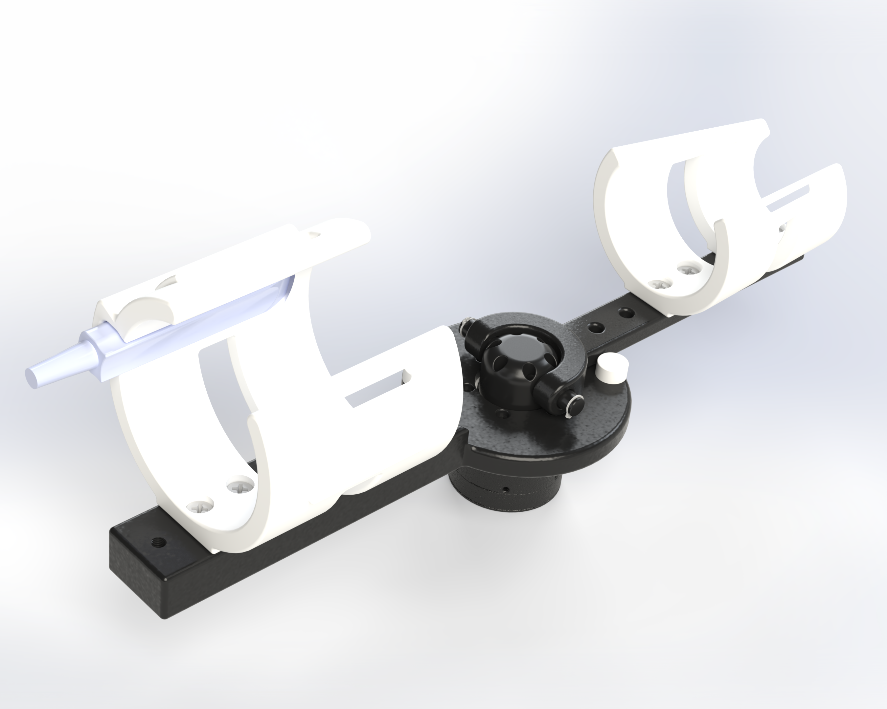
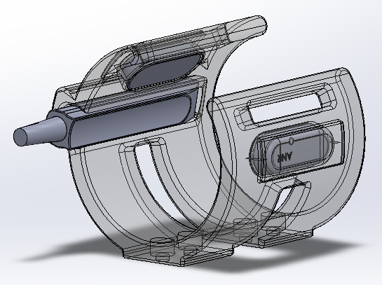
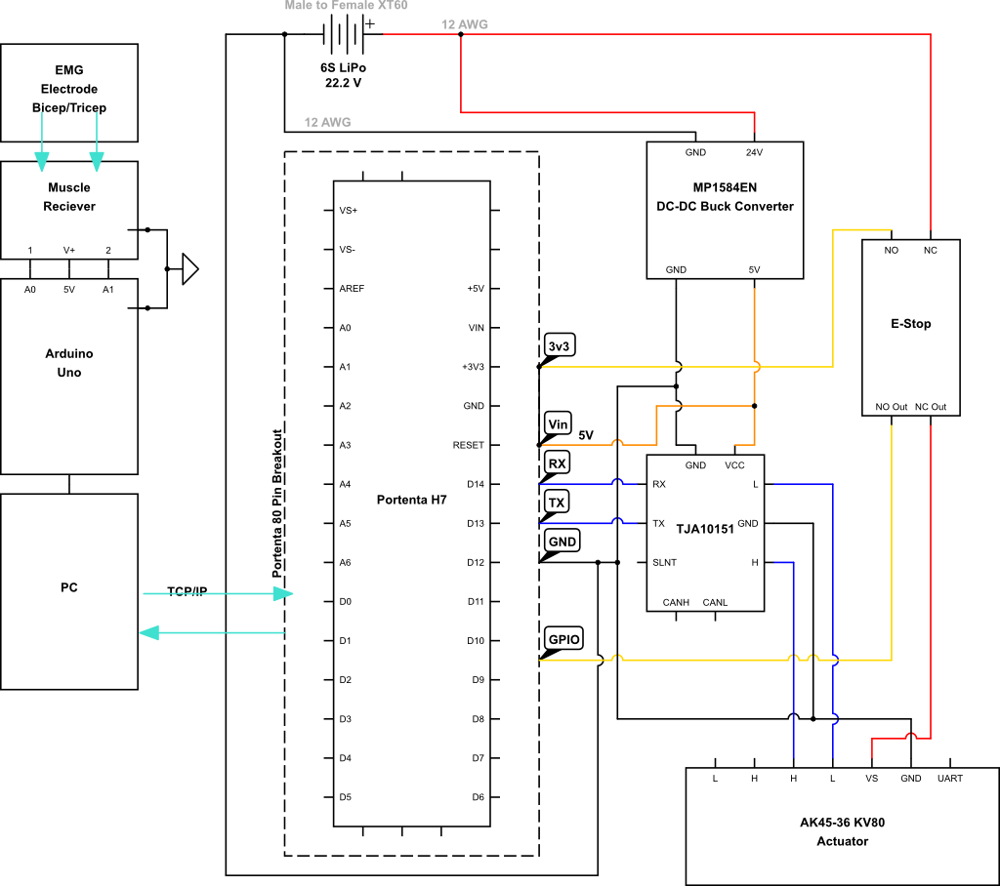

Project Overview
Traditional rehabilitation exoskeletons require extensive manual fitting procedures where clinicians carefully adjust assistance parameters for each patient, which is a time-consuming process that demands specialized expertise and must be repeated as the patient's condition evolves. This project eliminates that barrier by developing an intelligent elbow exoskeleton that automatically determines appropriate assistance levels through EMG (electromyography) signal analysis.
By analyzing muscle activation patterns from strategically placed EMG sensors on the bicep and tricep, the system can infer how much force a user needs without manual tuning. This enables reduced clinical appointment time, self-adjustment as patient strength improves, personalized assistance tailored to individual muscle patterns, and potential for at-home use without constant supervision.
Design Philosophy: Direct-Drive Simplicity
The exoskeleton features a direct-drive actuation system with a high-torque BLDC motor positioned at the elbow joint, providing 8 Nm rated torque and 24 Nm peak torque. This direct-drive approach was chosen over complex cable-driven systems for mechanical simplicity, positional accuracy (no cable stretch or backlash), force transparency, and improved reliability with fewer failure modes.
While this adds approximately 340g of worn mass at the elbow compared to remote motor placement, the significant reduction in system complexity and improved reliability make this an acceptable trade-off for a research prototype focused on EMG control development.

Isometric CAD view showing motor housing and 2-DOF linkage assembly
Innovative 2-DOF Mechanical Design
The mechanical design incorporates two degrees of freedom: one motorized DOF for flexion/extension assistance (150-170° range with adjustable mechanical stop), and a passive DOF that allows lateral elbow movement for user comfort during natural arm motions. The passive DOF uses a dowel pin at the center of rotation with retaining rings, preventing binding and discomfort when users push, lift, or perform tasks requiring lateral elbow motion.
All structural components are 3D printed: PLA for rigid linkages (high strength-to-weight, excellent dimensional accuracy) and TPU for compliant orthotic interfaces (Shore 85A-95A hardness provides optimal balance between support and comfort). The upper arm orthotic wraps around the user's upper arm, providing a stable mounting platform for sensors while maintaining comfort during movement.
Integrated Sensor Mounting System
The upper arm orthotic features three strategically positioned sensor slots designed to capture comprehensive muscle activity and morphological data. This integrated approach eliminates the need for separate sensor mounting hardware and ensures consistent sensor placement across sessions—critical for reliable EMG signal interpretation.
EMG Sensor Slots (×2):
- Bicep Position: Located on the anterior side to capture biceps brachii activation during flexion movements. The slot is angled to align electrodes parallel to muscle fiber direction, maximizing signal amplitude and minimizing cross-talk from adjacent muscles.
- Tricep Position: Located on the posterior side to monitor triceps brachii activity during extension. Positioned to avoid the ulnar nerve pathway while maintaining optimal contact with the lateral or long head of the triceps.
- Design Features: Each EMG slot incorporates retention clips to secure standard surface electrodes (e.g., 30mm diameter Ag/AgCl), cable routing channels to prevent wire entanglement, and soft TPU cushioning to maintain consistent skin contact pressure (~20-30 kPa).
Ultrasonic Probe Slot (×1):
- Purpose: Accommodates a compact ultrasonic distance sensor to measure muscle thickness changes during contraction. This provides additional insight into muscle state beyond surface EMG, particularly useful for detecting deep muscle activation or compensatory strategies.
- Location: Positioned on the bicep side adjacent to the EMG sensor, allowing simultaneous measurement of electrical activity and mechanical muscle deformation.
- Technical Specifications: Slot sized for standard 10mm ultrasonic transducers with 2-4cm measurement range, adequate for capturing muscle thickness variations (typically 5-15mm change during MVC). The slot maintains the probe perpendicular to the skin surface for accurate distance measurement.
The sensor mounting system is designed for rapid user setup: sensors snap into their designated slots, pre-positioned at anatomically optimal locations based on anthropometric scaling. This eliminates the trial-and-error process of manual electrode placement, reducing setup time from 10-15 minutes to under 2 minutes while improving measurement repeatability. Gel or dry electrodes can be used depending on session duration and signal quality requirements.

Upper arm orthotic showing integrated sensor mounting slots for EMG and ultrasonic probes
EMG-Based Control Strategy
The control system integrates an Arduino Portenta H7 microcontroller (dual-core STM32H747 at 480+240 MHz) with CAN bus communication for real-time motor control and EMG signal processing. The M7 core handles real-time motor control via CAN bus, while the M4 core manages EMG signal processing including filtering (high-pass 20 Hz, low-pass 450 Hz, notch 60 Hz), feature extraction (RMS calculation over 200ms windows), and intent recognition.
During initial use, the system guides users through brief calibration: recording maximum voluntary contraction (MVC) for both bicep and tricep, measuring forearm anthropometrics for gravity compensation, assessing current weakness levels through movement attempts, and fitting optimal EMG-to-torque mapping parameters using machine learning algorithms.

Complete electrical architecture showing CAN communication and dual-core processing
Power System and Safety Features
The exoskeleton is powered by a 6S LiPo battery (22.2V nominal) providing approximately 1.5 hours of runtime under typical use. An MP1584EN buck converter steps down battery voltage to 5V for the Portenta H7 microcontroller. Safety systems include a hardware emergency stop button with NC contact in series with motor power, software torque limiting to prevent excessive forces, and dual limit switches at phonograph ends (concept adapted for safe range-of-motion enforcement).
Design Calculations and Validation
Structural analysis validated that PLA linkages provide adequate strength for the application while maintaining low weight. FEA simulations under combined loading (24 Nm peak motor torque, 1.6 kg forearm weight, 5 kg external load) showed maximum von Mises stress of 18 MPa (safety factor 3.3 against 60 MPa PLA yield strength) with maximum deflection of 0.8 mm at the end of linkage. The passive DOF dowel pin (6mm steel) was sized with 40× safety margin for unforeseen lateral loads.